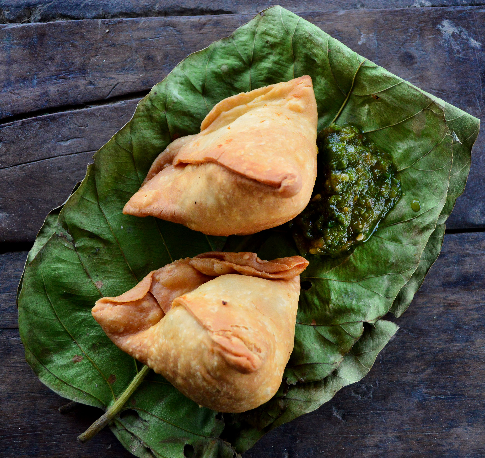

Indian Samosa

How to make Samosa
Samosas are one of my favourite Indian appetizers.
That delicious savoury pastry is so good! It's hard to describe kind of buttery, crumbly, with a little bit of chewiness.
Then filled with a mildly spiced, tender potato and pea filling so tasty!
This easy Samosa is an extremely popular Indian deep-fried appetizer with spiced potatoes.
This is an easy samosa recipe with a step-by-step guide.
Pair these samosas with my tamarind chutney and mint-coriander chutney, maybe even a hot cup of Chai, and enjoy your self-made mini-heaven!
Ingredient
Samosa filling:
- 4-5 Potatoes boiled and peeled
- ½ block Tofu optional
- 1 tsp Whole coriander seeds
- 1 tsp Whole fennel seeds
- 2 tsp Coriander powder
- 1 tsp Ground cumin
- 2-3 Green chilli peppers chopped
- 1-2 tsp Red chilli powder
½ tsp Turmeric
- 2 tsp Aamchur powder (dried mango powder)
- 1 tsp chaat masala
- Salt to taste
- ½ cup Frozen or fresh peas
- 1 tbsp Coriander leaves chopped
For the dough:
- 2 cups All purpose flour
- 1½ tsp Ajwain
- Salt to taste
- ⅓ cup Oil/ghee
- Water as needed
- Oil for frying
Samosa Making Step-by-Step
Samosa filling:
- Boil the potatoes in a large saucepan with enough water to cover them. Then, peel and mash the potatoes.
- In a frying pan, heat up oil on medium heat.
- Add the whole coriander seeds and fennel seeds and fry until they turn golden and fragrant (1-2 minutes).
- Add chopped green chilies to this, fry for a few seconds then, reduce the heat and add the cumin powder, coriander powder, turmeric powder, red chili powder, and mix.
- Add the frozen/fresh peas and let it cook with the spices for 4-5 minutes, then add amchur powder.
- Add boiled potatoes, and crushed tofu (if using). Season with salt, mix well and take it off the heat.
- Add chopped coriander leaves, mix that in and set the filling aside.
Dough
- In a large bowl, mix together flour, salt and ajwain/carrom seeds.
- Then add the oil slowly and incorporate that into the flour by mixing and rubbing the mix between your hands. The flour should be well coated with oil and when you press the crumbly flour mix between your fingers, it should hold together.
- Gradually add water 2 tbsp at a time, adding more if required and mix it well until you form a pliable dough.
Shaping the samosas:
- Divide the dough into 12-16 equal parts and roll the dough into an oval shape, now cut it horizontally, dividing into 2 equal parts using a dough-divider.
- Fold the straight edge and seal to form a a cone. Now stuff 2 tsp of the samosa filling into the cone. Bring the bottom of the wrapper to the top and fold the excess dough in the middle and seal the samosa tight by firmly pressing it between your fingers.
- Bring up frying oil to heat in a deep frying pan.
- Fry the samosas on a low flame and stir occasionally for at least 15 minutes.
- Once the samosas turn golden and crispy, remove them from the oil with a slotted spoon.
- Place them in a bowl lined with paper towels and drain the excess oil.
Samosa are now ready to be enjoyed with green chutney and tamarind chutney!